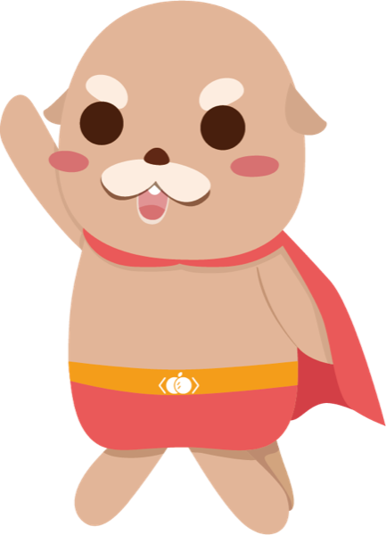
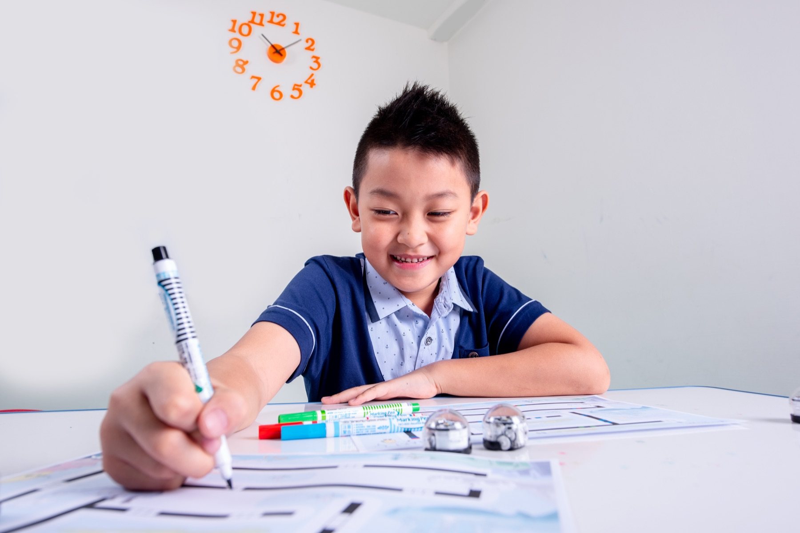
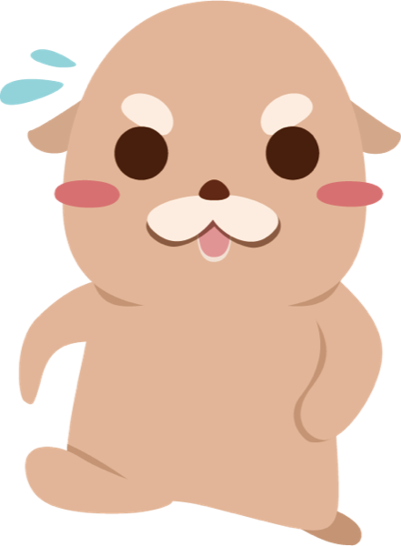

<code> since 2012 </code>
兒童程式教育首選
橘子蘋果程式學苑
國小到高中皆能開始，零經驗也能輕鬆學會。
從 Scratch 到 AI 的完整課程體系，
年來，我們陪超過 10 萬名孩子寫下第一行程式。

<0> 真實課堂 </0>
國小到高中皆能開始，零經驗也能輕鬆學會。
從 Scratch 到 AI 的完整課程體系，
年來，我們陪超過 10 萬名孩子寫下第一行程式。
橘子蘋果程式學苑成立於 2012 年，是台灣規模最大的兒童程式教育機構之一。
提供從 Scratch 到 AI 的九階段完整課程體系，
全台 12 縣市、40+ 教學據點，
累計超過 10 萬名學生、500 位以上資深師資，
學習時數突破五百萬小時。
每個年齡有不同的認知發展，橘蘋為每個階段設計了最適合的起點。

GRADE 1-3｜國小低年級從圖像化積木開始，用頑皮艾伯特、STEAM 積木、麥塊、Roblox 建立程式邏輯的第一步。不用打字、不用英文，玩著玩著就懂了序列、迴圈、條件判斷。
艾伯特 → 麥塊 → Roblox 看玩創課程 → GRADE 4-7｜國小中高年級MIT 開發的 Scratch 是全球兒童程式教育的黃金標準。從 Scratch 打好基礎，一路銜接 Python、JavaScript，九個階段一條龍，不用中途換體系。
Scratch → Python → JS → AI 看菁英課程 → GRADE 8+｜國中以上國中以上零基礎可直接從 Python 開始。想衝升學的孩子，可挑戰 APCS 檢定與 ITS 國際認證——橘蘋是 ITS 官方考場，認證通過率 80%。
Python → APCS / ITS 認證 看 Python 課程 →
程式的序列、迴圈、條件判斷，本質上是把大問題拆解成小步驟的訓練。這種能力會直接反映在數學和其他學科的表現上。
AI 工具越普及，懂得「怎麼運用科技」的孩子優勢越大。學程式不是為了讓每個孩子當工程師，而是讓他們成為駕馭 AI 的人，不是被動的使用者。
APCS 檢定成績可用於申請大學資工相關科系，ITS 國際認證可放入學習歷程。想深入了解，可以閱讀 APCS 是什麼？完整攻略 與 幾歲開始學程式最好？
每個課程都是體系的一環——孩子不用換補習班，就能從 6 歲學到 18 歲。
1-3 年級程式啟蒙：頑皮艾伯特、STEAM 創意積木、麥塊、Roblox AI 遊戲設計。
了解更多 → ELITE 1-24 年級以上。MIT 開發的圖像化程式語言，兒童程式教育的世界標準入門。
了解更多 → ELITE 3-4接軌真實世界的程式語言。國中以上零基礎可直接入門，銜接 AI 與資料應用。
了解更多 → ELITE 5-6JavaScript 與 HTML5 網頁程式開發，做出可以真正上線互動的網頁作品。
了解更多 → ELITE 7-9菁英體系最終三階段：資料庫應用、演算法研究、AI 人工智慧實作。
了解更多 → CERTIFICATEAPCS 升學檢定、ITS 國際認證（Python／JavaScript／運算思維），橘蘋是官方考場。
了解更多 → MATH1-5 年級。美國數學思維邏輯系統在地化，培養跨年級的數學思考力。
了解更多 → AI LITERACY5 年級以上。AI 素養、提問力、批判性思考——駕馭 AI 工具的底層能力。
了解更多 → CAMPS麥塊、Roblox、Python、AI 藝術、APCS 培訓——短期密集，寒暑假最好的安排。
了解更多 →橘蘋學員的 ITS 國際認證通過率達 80%。我們不只教孩子寫程式，更用國際標準檢驗學習成果，讓努力看得見、帶得走。
採「篩選、檢測、培訓」三關把關：資工資管背景篩選、程式能力與教學情境測驗、完整課程培訓——通過率不到三成，才能站上講台。
橘蘋從 2011 年開始研發程式課程，比 108 課綱把程式納入國教早了近十年。今天的課程體系，是十四年教學迭代的累積。
不是「有學到東西」而已——是拿得出證據的成果。
橘蘋學員以 APCS 檢定優異成績，透過個人申請錄取國立清華大學資訊工程學系——程式能力直接成為升學的敲門磚。
學員透過陽明交通大學「百川計畫」特殊選才管道錄取資工系，用程式作品與實作能力證明自己，不只靠考試分數。
從橘蘋走出去的學生李明謙，進入頂尖大學後的傑出表現受《商業周刊》專題報導——孩子的成長故事，媒體替我們說。
橘蘋學員團隊為史前博物館開發「玩程式・學工藝」互動遊戲——學程式不只是練習題，而是做出真實世界會用到的作品。
「老師會依每個孩子的吸收程度調整教學節奏，孩子真正懂了才往下教——這才是真正的個人化指導，也是我覺得橘蘋和其他補習班最不一樣的地方。」
「想幫孩子報名 Roblox 課程，但年紀還不夠。諮詢時老師完整說明適齡課程規劃，完全不會為了招生硬推不合適的課，讓我對橘蘋的專業非常放心。」
「孩子從來不會主動複習才藝課，但上完橘蘋的課回家會自己繼續做專案。老師教法很活潑，孩子說『根本在玩遊戲』，但我看到的是他的邏輯思維在一點一點進步。」
「這是孩子最期待的才藝課，每週六完全不用催，自己就衝去了。每週的學習報告讓我看見孩子一步步成長，從找組件到完成作品，每個過程都是在學習。」
「帶 8 歲女兒來上 Minecraft 課，環境整潔，課堂上有多位老師隨時在旁指導。女兒完全沉浸其中，用遊戲學程式邏輯是很聰明的設計！感謝主任的熱心說明。」
「線上課程非常方便，省去接送時間。老師很有耐心，依孩子進度個別指導，設備有問題也即時電話協助解決，孩子每次上完課都說收穫很多。」
「孩子採線上方式參與課程，從初階程式開始，每個學習階段都像在闖關，讓他充滿熱情地持續下去。非常期待銜接下一個課程模式！」
「大女兒上橘蘋超過半年，邏輯思考明顯進步——遇到靈活的數學題或生活中的小問題，都能舉一反三。這是真的看得到的改變，後續也考慮讓弟弟一起加入！」
橘子蘋果是「中華民國補教業品保協會」正式會員（會員編號 020589，自 2018 年加入），家長預付的學費受協會履約保證機制保障，退費依協會規範辦理。深耕 年、全台直營教學據點——讓孩子學得安心，也讓家長付得放心。
實體教室與線上教室並行，住哪裡都能上課。
